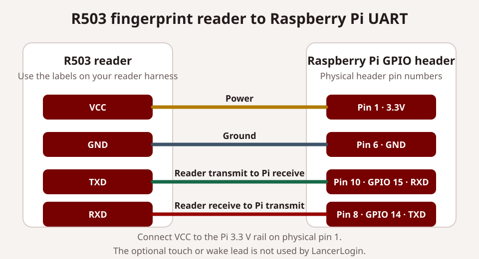
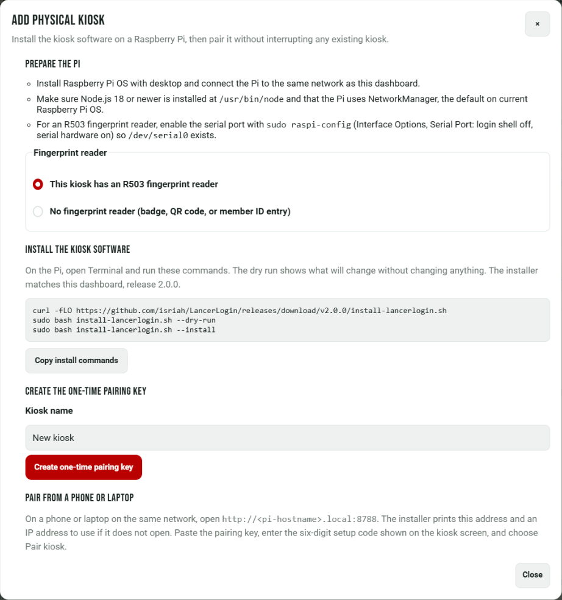
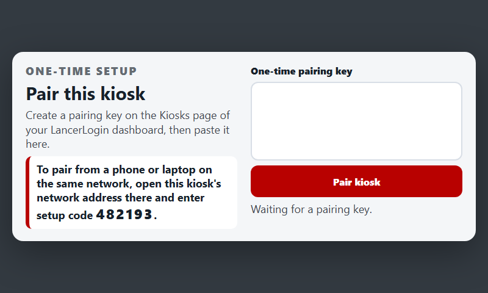
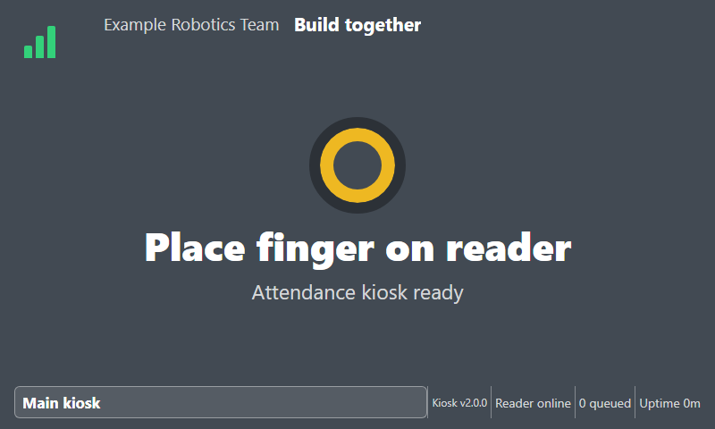

What you need
- A Raspberry Pi 3B+, 4, or 5 with at least 1 GB of RAM.
- A Waveshare 7-inch DSI LCD (E) touch display.
- Raspberry Pi OS with desktop, 32-bit or 64-bit, with NetworkManager.
- Node.js 18 or newer installed at
/usr/bin/node. - Wi-Fi or Ethernet. Complete any captive-portal login before installing; LancerLogin cannot sign in to one for you.
- An input device for the authentication method you choose:
| Method | Hardware |
|---|---|
| Fingerprint | An R503 fingerprint reader wired to the Pi's UART, with the serial port enabled as /dev/serial0. |
| RFID badge, NFC badge, or QR code | A USB reader that types the badge or code like a keyboard and ends with Enter. |
| Member ID entry | None. Members type their ID on the touch screen or an attached keyboard. |
Assemble the printed enclosure
Start with the LancerLogin enclosure CAD in Onshape. Print one case, one case back, and two screen brackets with no support material.
You also need eight M3 heat-set inserts, eight M3 × 6 socket-cap screws, the display's Pi mounting hardware, and its DSI ribbon cable. Install every heat-set insert in the case first: press each one straight and flush at a temperature suited to the material, then let the plastic cool.
- Attach the Pi to the display. Put the display face down on a clean, nonconductive surface. Use the display's mounting screws or standoffs and do not over-tighten its board.
- Connect the DSI ribbon cable. Seat it fully in both connectors, close both retaining tabs, and check its orientation against the marks on the boards.
- Install the reader. For fingerprint mode, press the reader nut into the pocket in the front case and thread the R503 into it from outside until secure, without twisting its cable.
- Set the display assembly into the case. Keep the DSI cable clear of standoffs and case edges.
- Wire the reader to the Pi. Use the pinout below. Confirm the labels on the reader harness before applying power. Do not rely on wire color. Connect a USB badge or QR reader according to its instructions.
- Fit the screen brackets. Secure the display assembly with the M3 × 6 screws. The screen should sit squarely with no trapped cable.
- Close the case. Arrange cable slack away from the screw posts, fit the case back, and fasten the remaining screws. Stop if a screw does not start cleanly in its insert.
Wire the R503 reader

| R503 label | Pi physical header pin | Pi signal |
|---|---|---|
| VCC | 1 | 3.3 V |
| GND | 6 | Ground |
| TXD | 10 | GPIO 15 / RXD |
| RXD | 8 | GPIO 14 / TXD |
Install the kiosk software
- In the dashboard, open Kiosks and choose Add kiosk. The Add physical kiosk dialog opens. Prepare the Pi repeats the requirements above.
- Under Fingerprint reader, choose This kiosk has an R503 fingerprint reader or No fingerprint reader (badge, QR code, or member ID entry).
- Under Install the kiosk software, choose Copy install commands. The commands match the release your dashboard runs.
- On the Pi, open Terminal and run the commands. They have this form:

curl -fLO https://github.com/isriah/LancerLogin/releases/download/v<version>/install-lancerlogin.sh
sudo bash install-lancerlogin.sh --dry-run
sudo bash install-lancerlogin.sh --installThe --dry-run step checks the Pi and describes the changes without making them. The --install step verifies the download, sets up the kiosk service, opens the attendance screen full-screen at desktop login, and adds a LancerLogin Kiosk desktop shortcut for reopening it. When you choose No fingerprint reader, the copied commands end with --no-fingerprint-reader. The installer never asks for Cloudflare details.
When it finishes, the installer prints the kiosk's local address, http://<pi-hostname>.local:8788, and an IP address to use if .local names do not work on your network.
Pair the kiosk
- In the dialog, under Create the one-time pairing key, enter a Kiosk name and choose Create one-time pairing key, then Copy pairing key. The key is valid for ten minutes.
- On a phone or laptop on the same network as the Pi, open
http://<pi-hostname>.local:8788. - Paste the pairing key, enter the six-digit setup code shown on the kiosk's own screen, and choose Pair kiosk.
- Back in the dashboard, refresh the Kiosks page. The new kiosk appears with its status.
Until it is paired, the kiosk's own screen shows Pair this kiosk. You can also paste the key there, in One-time pairing key, and choose Pair kiosk; pairing on the kiosk itself needs no setup code.

Pairing key
Combines your installation's address, the kiosk name, and a single-use code. Paste it as one item. The Pi does not store it.
Kiosk credential
Pairing gives the Pi its own credential. The Pi keeps it locally and the database stores only a hash.
More kiosks
Pair each kiosk with its own key and a unique name. Adding a kiosk does not affect the others.
Choose how members identify themselves
New kiosks start with fingerprint. To change a kiosk's method, select it on Kiosks, open Manage kiosk › Authentication settings, choose Fingerprint, RFID badge, NFC badge, Member ID entry, or QR code, and save. Each kiosk has its own method. The page shows a pending message until the kiosk applies the change.
Fingerprints, badges, and QR codes are linked to members on the kiosk itself, in Authentication maintenance. Member ID entry needs no setup. Badge and QR values are stored on the kiosk only as keyed digests and never sent to the dashboard.
Scan without choosing a meeting
Members never pick a meeting. A member presents a finger, badge, or code, or enters their member ID. The dashboard matches the scan time to the one meeting whose attendance window is open. The first scan welcomes the member and records arrival; the next says goodbye and records departure. An eight-second pause stops one held finger or double badge read from counting twice.
If the network is down, every scan is saved in the kiosk's queue and sent when the connection returns. The screen shows Saved for sync under the welcome or goodbye message. The footer shows the kiosk name, its software release, reader status, the number of scans waiting, and uptime.

If the kiosk starts without a trusted clock, attendance pauses and the screen offers Open maintenance. Enter the local settings PIN and confirm the date and time.
Use the protected local tools
These tools are available only on the kiosk's own screen and need a local settings PIN of 6 to 12 digits. The first visit creates the PIN.
- Wi-Fi settings: press and hold the network dot for three seconds. Choose a network and type its password on the on-screen keyboard. LancerLogin passes the password to NetworkManager and never stores or shows it.
- Authentication maintenance: press and hold the organization name or logo for three seconds. Here you can test the reader, enroll fingerprints, link badges and QR codes to members, remove local links, review rejected scans, exit to the desktop, or unpair the kiosk.
To enroll a fingerprint, choose an active roster member, enter a free reader slot, and have the member place the same finger twice. The template is created and kept inside the R503. Enrollment needs the kiosk to be online. An Admin can also start enrollment from the kiosk's Manage kiosk page in the dashboard; the member then confirms their name on the kiosk before scanning.
Manage kiosks from the dashboard
On Kiosks, select a device and open Manage kiosk › Diagnostics to see its heartbeat, reader and network state, scans waiting, last successful sync, installed release, and pairing time. Operators can view this page. Admins can rename a kiosk with the pencil next to its name and use Authentication settings, Device maintenance, and Retire kiosk.
Device maintenance sends one of six fixed commands to the selected kiosk:
| Command | What it does |
|---|---|
| Reload display | Reloads the attendance screen. |
| Restart software | Restarts the kiosk service. |
| Reboot Pi | Reboots the Raspberry Pi after you confirm. |
| Reset network PIN | Removes the local settings PIN so the next person at the kiosk can create a new one. |
| Update kiosk | Installs the newer release offered for this kiosk. See Update kiosks. |
| Erase unlinked fingerprints | Appears when the reader holds fingerprints no member is linked to, such as retired or replaced enrollments. Erases only those templates after you confirm. Linked fingerprints are kept. |
Recovery accepts only those fixed commands. The dashboard never opens a remote shell on the Pi. Retiring a kiosk stops its credential from working; it does not erase the Pi.
Rejected scans on the Kiosks page lists scans the dashboard could not accept, such as a scan outside any meeting window. Review each one and correct attendance in the meeting if needed. Marking a scan reviewed does not change attendance.
Share fingerprints between kiosks
By default, each fingerprint stays inside the reader where it was enrolled, so a member enrolls separately at each fingerprint kiosk. An Admin can instead turn on Fingerprint cloud storage in Settings › Modules › Attendance › Fingerprint sharing. New enrollments then upload in encrypted form and other paired fingerprint kiosks download them automatically, even while the original kiosk is offline. Read the privacy notice and get your organization's permission before turning it on.
Test without hardware
The Browser simulator lets an Admin check in a roster member from a browser during an open meeting window. Its card on the Kiosks page has Open simulator, and Start simulator or Stop simulator to bring it online or take it offline. Its check-ins are marked as simulated. It is useful for trying LancerLogin and for Attendance setup, but it does not test a reader, the Pi, or the offline queue.
Move a kiosk to another installation
On the kiosk, open Authentication maintenance, choose Unpair kiosk, and confirm. Let any waiting scans sync first; unpairing refuses to continue while scans are pending. The kiosk archives its old pairing, roster cache, and links for 30 days, keeps its Wi-Fi settings and PIN, and returns to the pairing screen. Pair it with a key from the new dashboard, then retire the old entry in the original dashboard.
Restart or recover a kiosk
If the attendance screen is closed, open the LancerLogin Kiosk desktop shortcut. If the kiosk shows a problem, try Reload display, then Restart software, from the dashboard. For anything more, see Troubleshoot a kiosk. Do not delete the kiosk's local state, copy a queue between kiosks, or pair a working kiosk again to fix a problem: waiting scans could be lost or duplicated.